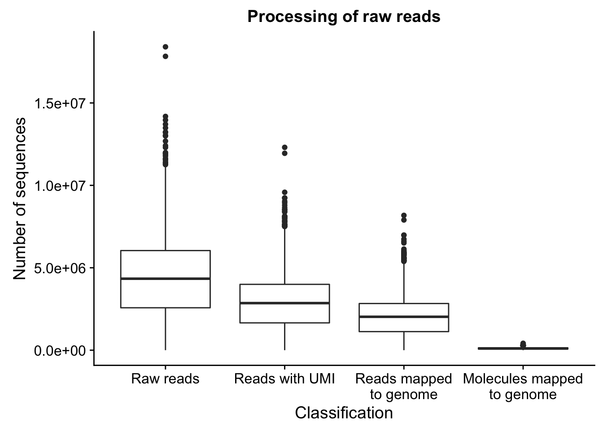

Analysis of totals counts
John Blischak
2017-08-14
Last updated: 2018-07-01
Code version: 5eab055
This analysis explores the total counts of reads and molecules mapped to each source (human, fly, worm, and ERCC).
Setup
library("cowplot")
library("dplyr")
library("ggplot2")
library("tidyr")
theme_set(theme_cowplot())
source("../code/functions.R")
library("Biobase")Import data.
eset <- readRDS("../data/eset.rds")
anno <- pData(eset)Remove samples with bad cell number or TRA-1-60.
eset_qc <- eset[, anno$cell_number == 1 & anno$tra1.60]
anno_qc <- pData(eset_qc)Extract the columns relevant for this analysis.
totals <- anno_qc %>% select(experiment:well, raw:mol_hs)What percentage of reads are mapped to the genome?
totals_long <- totals %>%
gather(key = "type", value = "count", raw:mol_hs) %>%
filter(type %in% c("raw", "umi", "mapped", "molecules")) %>%
mutate(type = factor(type, levels = c("raw", "umi", "mapped", "molecules"),
labels = c("Raw reads", "Reads with UMI",
"Reads mapped\nto genome",
"Molecules mapped\nto genome")))
head(totals_long) experiment well type count
1 02192018 A01 Raw reads 4755105
2 02192018 A02 Raw reads 1955271
3 02192018 A03 Raw reads 4876011
4 02192018 A04 Raw reads 6770341
5 02192018 A05 Raw reads 8782029
6 02192018 A06 Raw reads 7043643ggplot(totals_long, aes(x = type, y = count)) +
geom_boxplot() +
labs(x = "Classification", y = "Number of sequences",
title = "Processing of raw reads")
| Category | mean | sd | % of raw (mean) |
|---|---|---|---|
| Raw reads | 5.023019510^{6} | 2.253564210^{6} | 1.00 |
| Reads with UMI | 3.309334110^{6} | 1.518695810^{6} | 0.65 |
| Reads mapped to genome | 2.33680210^{6} | 1.119883110^{6} | 0.46 |
| Molecules mapped to genome | 1.183215110^{5} | 5.3484410^{4} | 0.03 |
How does the number of mapped reads vary by C1 chip?
mapped <- totals_long %>%
filter(type == "Reads mapped\nto genome")
ggplot(mapped, aes(x = experiment, y = count)) +
geom_boxplot() +
labs(x = "C1 chip", y = "Number of mapped reads",
title = "Mapped reads per C1 chip") +
theme(axis.text.x = element_text(angle = 45, hjust = 1, vjust = 1))
mapped_sum <- mapped %>%
group_by(experiment) %>%
summarize(total = sum(count))
ggplot(mapped_sum, aes(x = experiment, y = total)) +
geom_bar(stat= "identity") +
labs(x = "C1 chip", y = "Total number of mapped reads",
title = "Total mapped reads per C1 chip") +
theme(axis.text.x = element_text(angle = 45, hjust = 1, vjust = 1))
Sorted by total number of mapped reads (in millions).
mapped_sum %>%
arrange(total) %>%
mutate(total = total / 10^6) %>%
knitr::kable()| experiment | total |
|---|---|
| 12042017 | 159.2927 |
| 10022017 | 172.9970 |
| 12112017 | 174.3949 |
| 10062017 | 174.9899 |
| 11272017 | 177.3012 |
| 11152017 | 180.4016 |
| 11202017 | 180.6296 |
| 02242018 | 181.0613 |
| 09272017 | 181.2822 |
| 02282018 | 181.2910 |
| 10172017 | 181.3652 |
| 12132017 | 182.2084 |
| 12062017 | 182.9707 |
| 03012018 | 183.6841 |
| 12082017 | 184.4322 |
| 03172017 | 184.7017 |
| 11162017 | 185.1417 |
| 03162017 | 185.2525 |
| 09262017 | 185.5391 |
| 02262018 | 185.6744 |
| 02202018 | 186.4867 |
| 11302017 | 186.8379 |
| 11142017 | 187.3253 |
| 11172017 | 189.3749 |
| 02212018 | 190.5448 |
| 11292017 | 191.7120 |
| 11022017 | 191.8474 |
| 08222017 | 192.2871 |
| 08162017 | 192.5859 |
| 11102017 | 193.6744 |
| 04202017 | 194.0535 |
| 12122017 | 195.1131 |
| 10092017 | 195.7672 |
| 09252017 | 195.9887 |
| 11032017 | 196.2268 |
| 08112017 | 197.4141 |
| 11212017 | 197.6497 |
| 10302017 | 198.0889 |
| 10052017 | 200.7256 |
| 03072018 | 201.6887 |
| 11282017 | 202.5115 |
| 04072017 | 202.9047 |
| 11092017 | 204.0547 |
| 08182017 | 204.4532 |
| 04142017 | 204.9052 |
| 08102017 | 205.5988 |
| 12142017 | 205.7184 |
| 10042017 | 207.0857 |
| 10102017 | 208.4722 |
| 08152017 | 208.7694 |
| 12052017 | 209.0949 |
| 03312017 | 210.1042 |
| 08282017 | 210.1087 |
| 02222018 | 211.0495 |
| 11082017 | 211.7339 |
| 04132017 | 212.3782 |
| 08142017 | 215.3691 |
| 04052017 | 215.4493 |
| 08212017 | 217.3511 |
| 03302017 | 219.8773 |
| 08302017 | 219.9493 |
| 02192018 | 226.0620 |
| 03052018 | 227.0483 |
| 11072017 | 230.4075 |
| 02272018 | 233.8705 |
| 10112017 | 235.2866 |
| 11132017 | 238.0722 |
| 08242017 | 239.1506 |
| 12072017 | 239.5364 |
| 10162017 | 241.1949 |
| 08312017 | 241.8290 |
| 03062018 | 241.9799 |
| 11062017 | 244.1415 |
| 03232017 | 245.7061 |
| 10132017 | 248.5827 |
| 12012017 | 257.0711 |
| 08232017 | 258.9153 |
| 08292017 | 260.7327 |
| 10122017 | 269.9484 |
What is the conversion of reads to molecules?
convert_all <- ggplot(totals, aes(x = mapped, y = molecules)) +
geom_point() +
labs(x = "Number of reads mapped to any genome",
y = "Number of molecules mapped to any genome",
title = "Conversion of reads to molecules")
convert_hs <- ggplot(totals, aes(x = reads_hs, y = mol_hs)) +
geom_point() +
labs(x = "Number of reads mapped to human genome",
y = "Number of molecules mapped to human genome",
title = "Conversion of reads to molecules for human")
convert_dm <- ggplot(totals, aes(x = reads_dm, y = mol_dm)) +
geom_point() +
labs(x = "Number of reads mapped to fly genome",
y = "Number of molecules mapped to fly genome",
title = "Conversion of reads to molecules for fly")
convert_ce <- ggplot(totals, aes(x = reads_ce, y = mol_ce)) +
geom_point() +
labs(x = "Number of reads mapped to worm genome",
y = "Number of molecules mapped to worm genome",
title = "Conversion of reads to molecules for worm")
plot_grid(convert_all, convert_hs, convert_dm, convert_ce,
labels = letters[1:4])
Drosophila spike-in
p_reads_dm <- ggplot(anno_qc, aes(x = as.factor(fly), y = reads_dm / mapped * 100)) +
geom_boxplot() +
labs(x = "Fly spike-in concentration",
y = "Percentage of mapped reads that mapped to fly genome")
p_mol_dm <- ggplot(anno_qc, aes(x = as.factor(fly), y = mol_dm / molecules * 100)) +
geom_boxplot() +
labs(x = "Fly spike-in concentration",
y = "Percentage of mapped molecules that mapped to fly genome")
plot_grid(p_reads_dm, p_mol_dm, labels = letters[1:2])
p_reads_dm_counts <- ggplot(anno_qc, aes(x = as.factor(fly), y = reads_dm)) +
geom_boxplot() +
labs(x = "Fly spike-in concentration",
y = "Number of reads that mapped to fly genome")
p_mol_dm_counts <- ggplot(anno_qc, aes(x = as.factor(fly), y = mol_dm)) +
geom_boxplot() +
labs(x = "Fly spike-in concentration",
y = "Number of molecules that mapped to fly genome")
plot_grid(p_reads_dm_counts, p_mol_dm_counts, labels = letters[1:2])
totals_percent <- anno_qc %>%
mutate(sample = paste(experiment, well, sep = "-"),
sample = factor(sample, levels = sample[order(reads_dm / raw)])) %>%
arrange(reads_dm / raw) %>%
group_by(experiment, sample, fly, worm, ERCC) %>%
summarize(p_reads_ce = reads_ce / raw * 100,
p_reads_dm = reads_dm / raw * 100,
p_reads_ercc = reads_ercc / raw * 100,
p_reads_hs = reads_hs / raw * 100,
p_unmapped = unmapped / raw * 100,
p_no_umi = (raw - unmapped - mapped) / raw * 100) %>%
gather(key = "type", value = "percent", p_reads_ce:p_no_umi) %>%
ungroup() %>%
mutate(type = factor(type, levels = c("p_no_umi", "p_unmapped", "p_reads_hs",
"p_reads_ercc", "p_reads_ce", "p_reads_dm"),
labels = c("No UMI", "Unmapped", "H. sapiens", "ERCC",
"C. elegans", "D. melanogaster")),
fly = factor(fly, levels = c(5000, 50000), labels = c("5 pg fly spike-on",
"50 pg fly spike-on")))
ggplot(totals_percent, aes(x = sample, y = percent, fill = type)) +
geom_col() +
facet_wrap(~fly) +
labs(x = "Sample", y = "Percent", title = "Read classification per sample") +
theme(legend.title = element_blank())
C. elegans spike-in
p_reads_ce <- ggplot(anno_qc, aes(x = as.factor(worm), y = reads_ce / mapped * 100)) +
geom_boxplot() +
labs(x = "Worm spike-in concentration",
y = "Percentage of mapped reads that mapped to worm genome")
p_mol_ce <- ggplot(anno_qc, aes(x = as.factor(worm), y = mol_ce / molecules * 100)) +
geom_boxplot() +
labs(x = "Worm spike-in concentration",
y = "Percentage of mapped molecules that mapped to worm genome")
plot_grid(p_reads_ce, p_mol_ce, labels = letters[1:2])
p_reads_ce_counts <- ggplot(anno_qc, aes(x = as.factor(worm), y = reads_ce)) +
geom_boxplot() +
labs(x = "Worm spike-in concentration",
y = "Number of mapped reads that mapped to worm genome")
p_mol_ce_counts <- ggplot(anno_qc, aes(x = as.factor(worm), y = mol_ce)) +
geom_boxplot() +
labs(x = "Worm spike-in concentration",
y = "Number of mapped molecules that mapped to worm genome")
plot_grid(p_reads_ce_counts, p_mol_ce_counts, labels = letters[1:2])
ERCC spike-in
p_reads_ercc <- ggplot(anno_qc, aes(x = as.factor(ERCC), y = reads_ercc / mapped * 100)) +
geom_boxplot() +
labs(x = "ERCC spike-in concentration",
y = "Percentage of mapped reads that mapped to ERCCs")
p_mol_ercc <- ggplot(anno_qc, aes(x = as.factor(ERCC), y = mol_ercc / molecules * 100)) +
geom_boxplot() +
labs(x = "ERCC spike-in concentration",
y = "Percentage of mapped molecules that mapped to ERCCs")
plot_grid(p_reads_ercc, p_mol_ercc, labels = letters[1:2])
p_reads_ercc_counts <- ggplot(anno_qc, aes(x = as.factor(ERCC), y = reads_ercc)) +
geom_boxplot() +
labs(x = "ERCC spike-in concentration",
y = "Number of reads that mapped to ERCCs")
p_mol_ercc_counts <- ggplot(anno_qc, aes(x = as.factor(ERCC), y = mol_ercc)) +
geom_boxplot() +
labs(x = "ERCC spike-in concentration",
y = "Number of molecules that mapped to ERCCs")
plot_grid(p_reads_ercc_counts, p_mol_ercc_counts, labels = letters[1:2])
Session information
sessionInfo()R version 3.4.1 (2017-06-30)
Platform: x86_64-pc-linux-gnu (64-bit)
Running under: Scientific Linux 7.4 (Nitrogen)
Matrix products: default
BLAS: /project2/gilad/jdblischak/miniconda3/envs/scqtl/lib/R/lib/libRblas.so
LAPACK: /project2/gilad/jdblischak/miniconda3/envs/scqtl/lib/R/lib/libRlapack.so
locale:
[1] LC_CTYPE=en_US.UTF-8 LC_NUMERIC=C
[3] LC_TIME=en_US.UTF-8 LC_COLLATE=en_US.UTF-8
[5] LC_MONETARY=en_US.UTF-8 LC_MESSAGES=en_US.UTF-8
[7] LC_PAPER=en_US.UTF-8 LC_NAME=C
[9] LC_ADDRESS=C LC_TELEPHONE=C
[11] LC_MEASUREMENT=en_US.UTF-8 LC_IDENTIFICATION=C
attached base packages:
[1] parallel methods stats graphics grDevices utils datasets
[8] base
other attached packages:
[1] bindrcpp_0.2 Biobase_2.38.0 BiocGenerics_0.24.0
[4] tidyr_0.7.1 dplyr_0.7.4 cowplot_0.9.1
[7] ggplot2_2.2.1
loaded via a namespace (and not attached):
[1] Rcpp_0.12.13 compiler_3.4.1 git2r_0.19.0 plyr_1.8.4
[5] highr_0.6 bindr_0.1 tools_3.4.1 digest_0.6.12
[9] evaluate_0.10.1 tibble_1.3.3 gtable_0.2.0 pkgconfig_2.0.1
[13] rlang_0.1.2 yaml_2.1.14 stringr_1.2.0 knitr_1.20
[17] rprojroot_1.2 grid_3.4.1 tidyselect_0.2.3 glue_1.1.1
[21] R6_2.2.0 rmarkdown_1.8 purrr_0.2.2 magrittr_1.5
[25] backports_1.0.5 scales_0.5.0 htmltools_0.3.6 assertthat_0.1
[29] colorspace_1.3-2 labeling_0.3 stringi_1.1.2 lazyeval_0.2.0
[33] munsell_0.4.3 This R Markdown site was created with workflowr